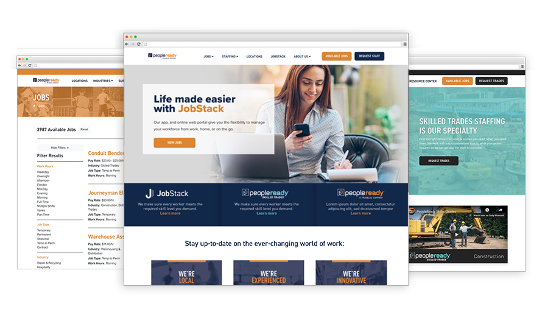
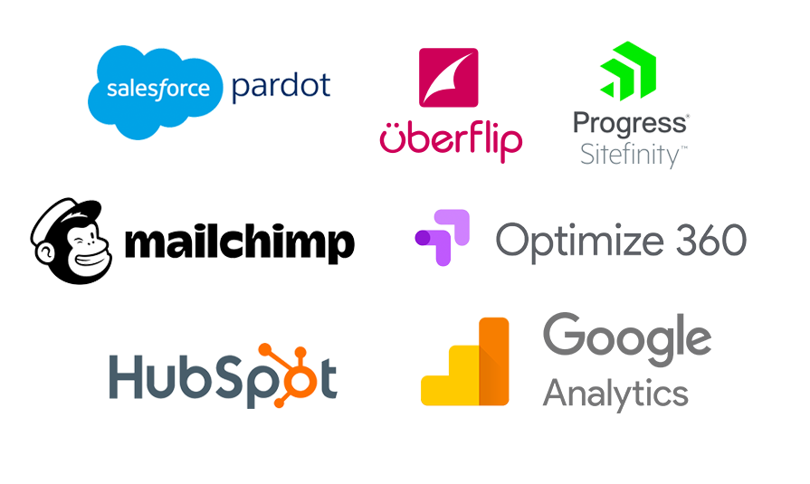

PeopleReady.com was a complete rebuild of the old website. As the designer and front-end developer, I was responsible for delivering the entire front-end of the project from start to finish. With a focus on the user, the site was optimized for bringing in new applicants and clients.
Project highlights from the first year:
• 15% digital applicant increase
• Doubled annual site revenue ($8M+ YOY Increase)
• Generating a monthly average of 700 MQL's
Visit the live sites.
peopleready.com | skilled.peopleready.com



PeopleReady went through a complete digital transformation and I was responsible all of the end-user touchpoints and internal tracking.
Key transformations:
• Building the intake forms & connections for salesforce
• Running 100+ unique A/B user tests
• Creating a dynamic analytic dashboard
• Designing a digital resource center housed in Uberflip
• Certification in Hubspot design program
Supporting the digital transformation, I also spent time working on email marketing for PeopleReady. Building campaigns and newsletters that looked good across many email readers (including Outlook...) These were built on several different platforms such as Mailchimp, Pardot, Marketo, and Hubspot.
 Previous Project
Previous Project